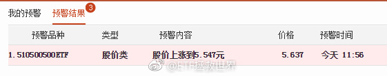
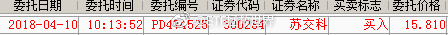
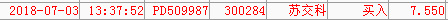

分享两个最近的案例：一，500网格。一个小网可以出货了。二，我经常说的“让大家开心一下，我某个股票又跌了30%”。是的，我会用一小部分资金配置打新门票，再等权买入一堆量化选出的股票。其中一个下跌30%补仓的例子是这样：我对于门票股的补仓价位，是该股下跌30%；60%；90%各补一次。金额与初始金额相同。这只股票下跌到30%（复权价格）的时候补了一次，几乎是最低点。目前盈利15%。介绍一点经验，如果想借鉴，一定要做好压力测试。同时，下跌补仓只适合量化买入几十只股票的情况，不适合重仓补。
回复@向往世界的游星:2900±50是压力//@向往世界的游星:如你所说，反弹2900点//@ETF拯救世界:回复@追求确定性2:连涨15个交易日，野百合也有春天。买辣鸡没错的//@追求确定性2:昨天美元债大涨啊，我的正1%了。@ETF拯救世界:50的买点为何总是这么风骚……再次买在最低，今天又领涨。其实50真的很棒，只要你会玩……
回复@炒饭821:还没签呢！疯了。//@炒饭821:老大，通稿新政策影响挺大的啊，医药也翻红了，难道股市楼市真的要活跃了，你这房子买的点厉害了//@ETF拯救世界:回复@追求确定性2:连涨15个交易日，野百合也有春天。买辣鸡没错的//@追求确定性2:昨天美元债大涨啊，我的正1%了。@ETF拯救世界:50的买点为何总是这么风骚……再次买在最低，今天又领涨。其实50真的很棒，只要你会玩……
回复@追求确定性2:连涨15个交易日，野百合也有春天。买辣鸡没错的//@追求确定性2:昨天美元债大涨啊，我的正1%了。@ETF拯救世界:50的买点为何总是这么风骚……再次买在最低，今天又领涨。其实50真的很棒，只要你会玩……